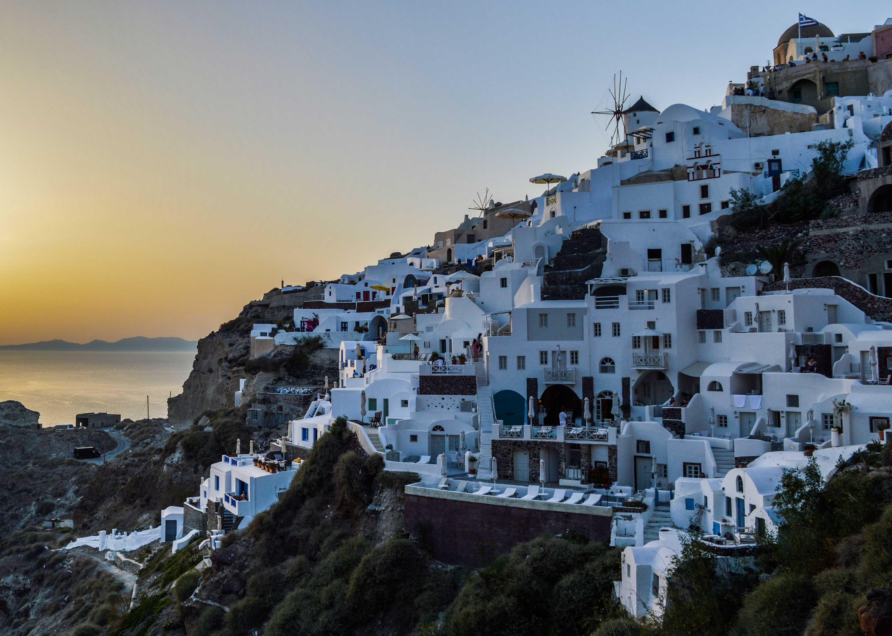

Dubai
Dubai is famous for the record-breaking Burj Khalifa, Dubai Mall, and the Palm, its vibrant culture, turbulent history, modern infrastructure, huge aquarims and indoor ski slopes. Dubai is also known for its ultra-fast cars, driverless subway, scorching summer heat, and fantastic beaches.
 Click here for more information...
Click here for more information...
Santorini
Santorini is most famous for its beautiful sunsets and long volcanic beaches. This means that the Aegean island is one of the most popular tourist destinations in Europe. If you know anything about Greek mythology, then no doubt you'll have heard of the lost island of Atlantis. Local legend has it that Santorini is lost Atlantis...
 Click here for more information...Maldives beach
The Islands in the Maldives have white and fine quality sand that embraces the tropical vegetation. Eye-pleasing natural beauty of these islands attract tourists from around the world. The beaches are nestled amidst beautiful coral islands and give you relationship goals to be ticked off your bucket list.
 Click here for more information...
Click here for more information...